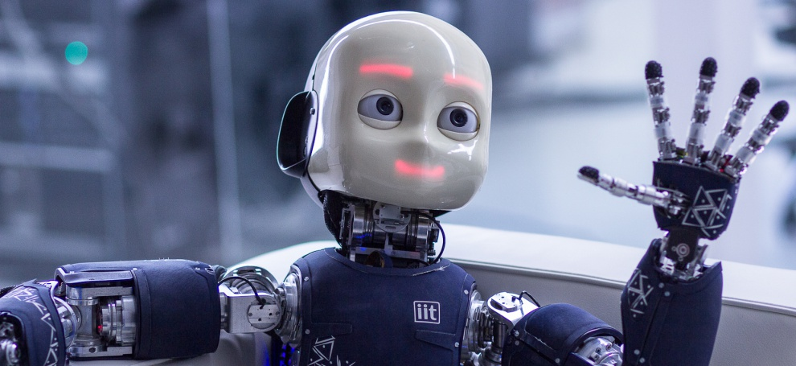
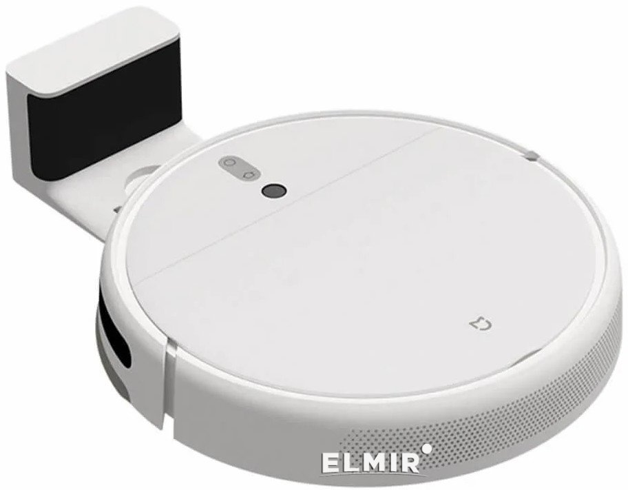

Ідея штучних істот вперше згадується в старогрецькому міфі про Кадма, який, убивши дракона, розкидав його зуби по землі і заорав їх, із зубів виросли солдати, та в іншому старогрецькому міфі про Пігмаліона, який вдихнув життя в створену ним статую, — Галатею. Також в міфі про Гефеста розповідається, як він створив собі різних слуг. Староєврейський міф розповідає про Голема, який був оживлений магією.

Робот-гуманоїд (людиноподібний робот) — це машина, ходова частина якої виконано у вигляді людиноподібного тіла.
Гуманоїдний дизайн робота зумовлений певною метою:функціональністю — для використання людських інструментів чи середовищ життя людини;
з експериментальною метою — для вивчення прямоходіння;
з медичною метою — вивчення впливу на організм тих чи інших навантажень тощо.
Загалом, людиноподібні роботи мають тулуб, голову, дві руки і дві ноги; хоча деякі види людиноподібних роботів можуть моделювати тільки частину тіла, наприклад, від голови — до пояса. Деякі людиноподібні роботи можуть мати голову, призначену для реплікації людських рис обличчя (таких, як очі і рот тощо).

Побутовий робот — робот, призначений для допомоги людині в повсякденному житті.
Наразі поширення побутових роботів є невеликим, проте футурологи передбачають широке їх використання у найближчому майбутньому.
Відомі наступні комерційні моделі побутових роботів:-роботи-іграшки;
-соціальні роботи, які автономному чи напівавтономному режимі можуть взаємодіяти та спілкуватись з людьми;
-роботи-прибиральники (робот-пилосос, робот для миття підлоги тощо)
-роботизовані газонокосарки
-роботи для чищення басейнів, каналізаційних труб тощо.
У більшості випадків сучасні роботи промислового призначення — це «руки», маніпулятори, закріплені на основі і призначені для виконання одноманітної роботи типу складання, переміщення. До роботів також належать мобільні пристрої, що працюють у небезпечних для людини середовищах і керовані дистанційно, наприклад роботи, що працюють на великих водних глибинах, у космосі, пристрої військового призначення (ведення розвідки, розмінування, доставка боєприпасів тощо) та ін., а також роботизовані іграшки.